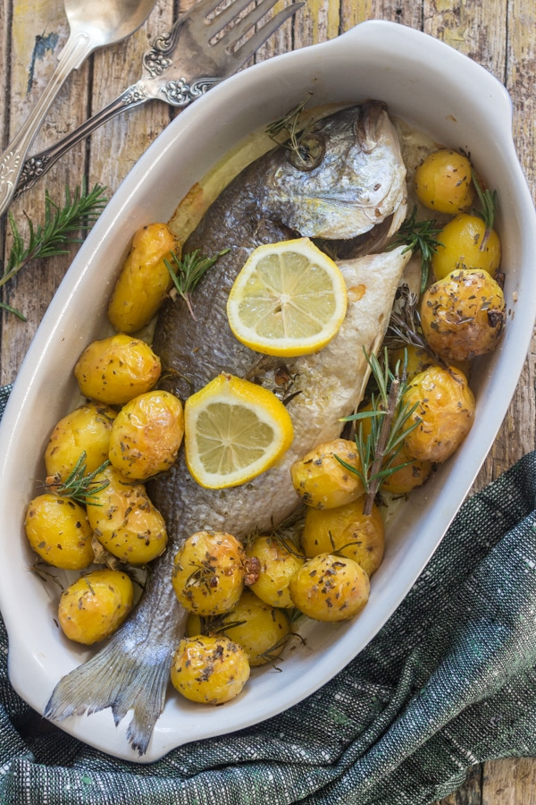

Baked Trout

You will need:
| Ingredient Baked Whole Fish | Quantity |
|---|---|
| Whole Trout | 2 punds |
| Salt | 1 tsp |
| Fresh italian parsley | 10 springs |
| Fresh rosemary | 2-4 springs |
| Olive Oil | 2-3 tbs |
| Sliced fresh Lemon | - |
| Small new potatoes | 20 |
| Olive oil | 2 tbs |
| Garlic | 1 clove |
| Rosemary | 1-2 springs |
| Oregano | 1 tbs |
| Salt | 1/2 tbs |
1. Pre-heat oven to 375°F. Drizzle a tablespoon of olive oil on a large baking pan.
2. Sprinkle the salt on and in each fish. Place the following ingredients in the order listed in the cavity of the fish. One tablespoon of olive oil, 2 or 3 halves garlic cloves, 5 sprigs of parsley and 1 sprig of rosemary.
3. Place the fish (if making more than one whole fish, then the fish can be touching but not on top of each other) on prepared baking pan drizzle the fish with a little olive oil. Place the small potatoes around the fish.
4. Bake for approximately 30-40 minutes, depending on size (check with an instant read thermometer temp. 145°F (62C)). Let sit 5 minutes and then remove skin and bones , place clean meat on a plate and serve with fresh lemon and olive oil if desired. When serving always be careful of bones.
Enjoy!
More Recipes